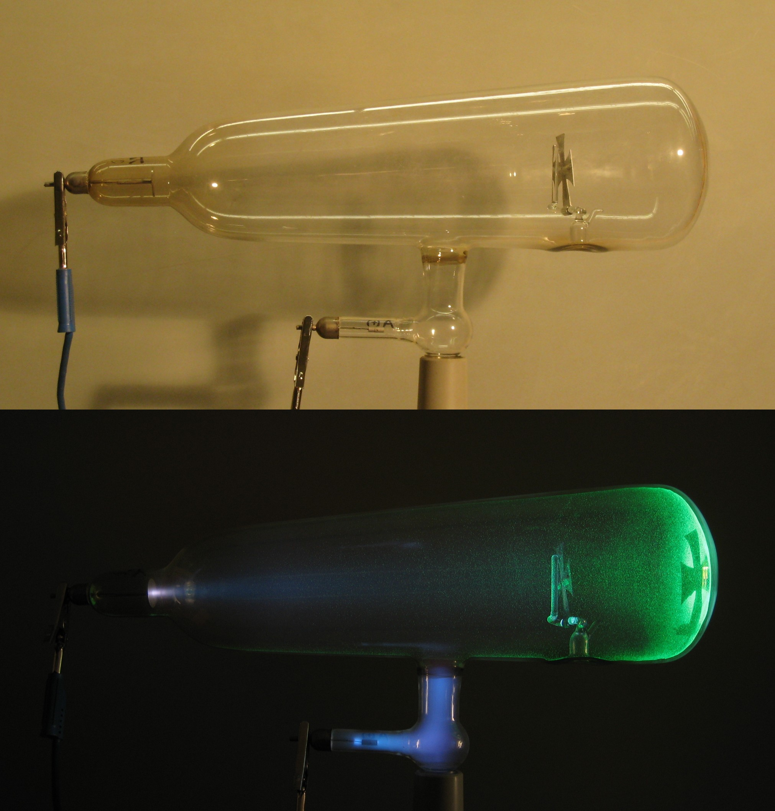
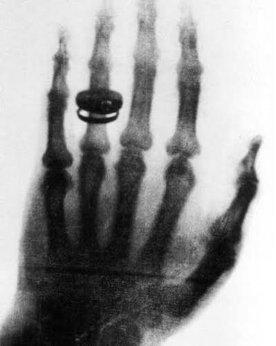

A história dos Raios-X começou no final do século XIX, um período de intensa investigação sobre a natureza da eletricidade e do magnetismo. No dia 8 de novembro de 1895, o mundo da física mudou drasticamente devido a uma observação acidental em um laboratório na Alemanha.
O fenômeno foi descoberto enquanto se estudavam os raios catódicos emitidos por um tubo de vácuo conhecido como Tubo de Crookes. Mesmo cobrindo o tubo completamente com uma cartolina preta espessa em uma sala totalmente escura, notou-se que uma placa de papel tratada com platinocianeto de bário, situada a uma certa distância do aparelho, emitia uma luminescência fluorescente.

Percebendo que um tipo totalmente novo de radiação invisível era capaz de atravessar a matéria sólida (como o papelão e a própria carne humana), e por não saber a natureza exata daquela força, o feixe foi batizado temporariamente com a letra matemática usada para representar o desconhecido: "X".
Para provar sua descoberta ao mundo, semanas após a observação inicial, foi realizada a histórica primeira radiografia médica: a mão da esposa do cientista descobridor, revelando a estrutura interna de seus ossos e o anel de casamento que ela usava no dedo.
